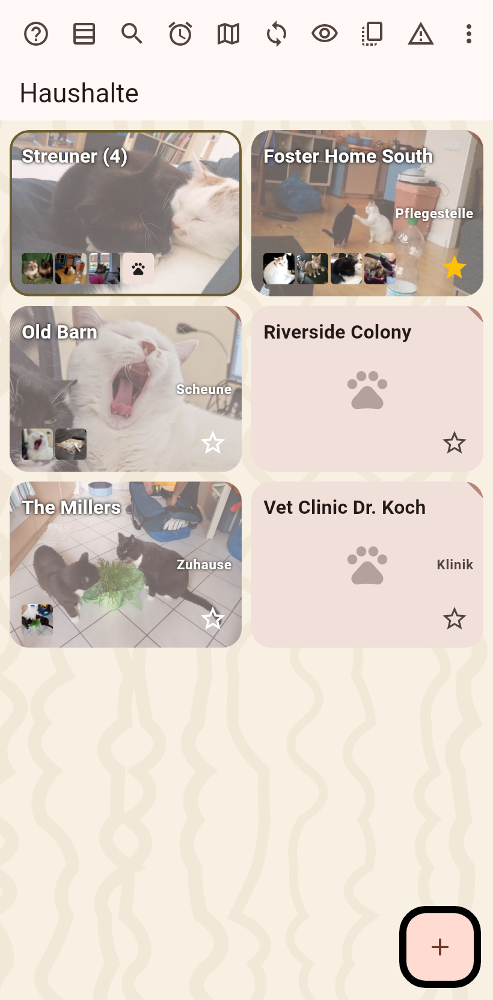

Ein Katalog kann Tiere statt Katzen halten: die Wörter ändern sich, Tier und Haushalt, das Platzhalterbild ist eine Pfote, die vorgeschlagenen Namen passen. Die Daten ändern sich nie.

In den Einstellungen des Katalogs gewählt und abgeglichen, damit jedes Gerät den Katalog gleich zeigt. Ältere Apps ignorieren es.
Ein Starterfeld mit Vorgaben, Katze, Hund, Kaninchen, Meerschweinchen, Hamster, Vogel, Pferd, Schildkröte, Frettchen, plus ein eigenes Wort; gefragt beim Anlegen eines Tieres im Haustiermodus. Die Rassen folgen der Tierart, und das Aussehen bietet jeder Tierart nur, was sie hat: die Merkmale eines Vogels sind ein Flügel und seine Augen, eine Schildkröte bekommt Panzerfarben.